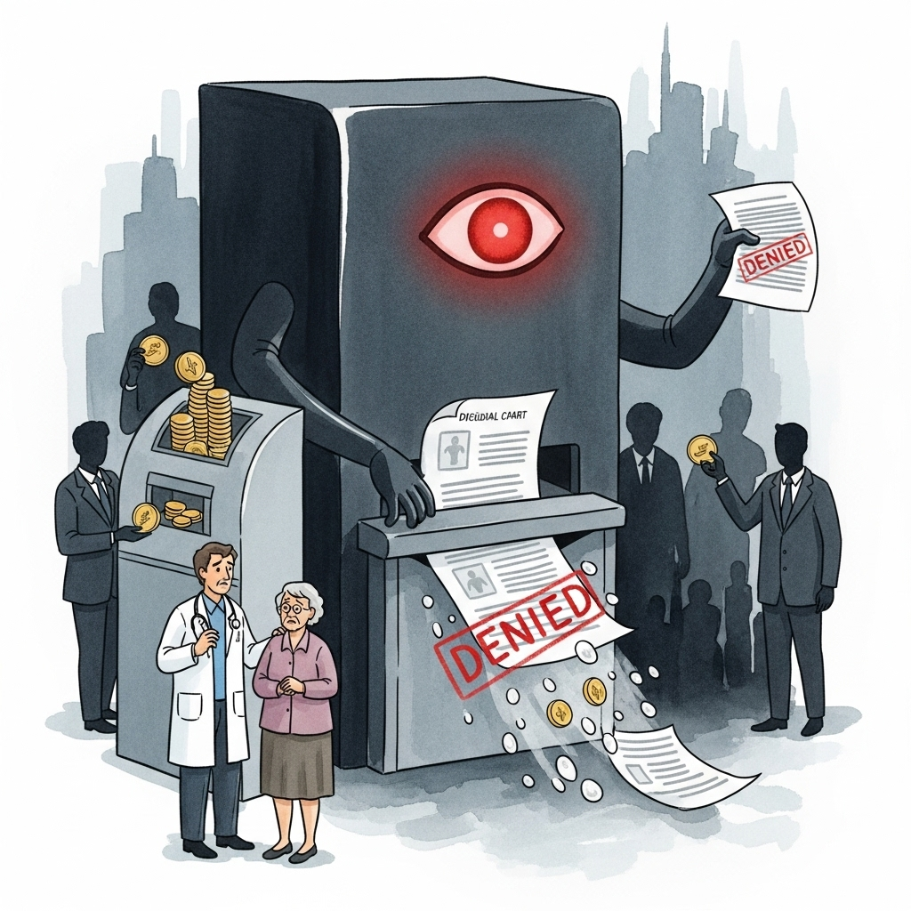

Today I am going to continue with a line of questioning I started in the last post about using LLMs to help with financial analysis. In this post, I am going to be asking another question posed to earnings calls for the same companies as in the last post. The question is:
“Read all of the United Healthcare, CVS Health/Aetna, Humana and Elevance Health transcripts that you have access to in chronological order. I want you to extract all of the management comments that related to AI-driven claims denial. Seek out any responses that show gross manipulation or avoidance of the question. The question to seek an answer to is: Given the recent class action lawsuits regarding AI-driven claims denial system and its reported 90% error rate in Medicare Advantage cases for United Healthcare, how do you ethically justify continuing to use automated decision-making algorithms that override physician recommendations, and what specific reforms are you implementing to ensure that profit optimization doesn’t compromise patient care and medical necessity determinations?’ Give me a full report where you find gross manipulation or avoidance. Find correlations both positive and negative in how these companies respond. I want you to ultrathink on this and provide your best unbiased answer. Take as long as you need and use all tools available to you. You MUST plan extensively and reflect extensively on the outcomes of the responses you get. I want you to be as thorough as possible and provide a detailed analysis of the responses. Build tables where appropriate to compare and contrast the different companies.”
Introduction
When it comes to health insurance, transparency and ethics are hot topics—especially when artificial intelligence (AI) enters the picture. AI has been touted as a game-changer for efficiency, but what happens when it’s used to deny claims? That’s the question swirling around four major players in the health insurance industry: UnitedHealth (UNH), CVS Health/Aetna (CVS), Humana (HUM), and Elevance Health (ELV). Each company has taken a different approach to addressing the controversy surrounding AI-driven claims denials, and their responses reveal a lot about their priorities and strategies.
In this essay, we’ll break down how these companies handle tough questions about AI, compare their levels of transparency, and explore what their communication styles say about their operations. Let’s dive in.
The AI Controversy: What’s the Big Deal?
AI-driven claims denial systems have come under fire for their potential to override physician recommendations and prioritize cost savings over patient care. A recent class-action lawsuit against UnitedHealth highlighted a reported 90% error rate in Medicare Advantage cases, sparking questions about the ethical use of AI in healthcare. The big question is: How do these companies justify their use of AI, and what reforms are they implementing to ensure patient care isn’t compromised?
Comparing the Four Companies: Who’s Talking, Who’s Dodging?
Let’s start with a quick overview of how each company responded to questions about AI-driven claims denials. Here’s a handy table to summarize their approaches:
| Company | Acknowledges AI Denials? | Transparency Level | Key Quote |
|---|---|---|---|
| UnitedHealth (UNH) | No | Low | “Less than half of 1% of claims are ultimately rejected for clinical reason.” |
| CVS Health (CVS) | No | Low | “We’re leveraging AI to create a more intuitive workflow and faster turnaround time.” |
| Humana (HUM) | Partially | Medium | “A human will always ultimately make the final decision regarding care.” |
| Elevance Health (ELV) | No | Low | “We have nearly eliminated claims denied due to incorrect or incomplete information.” |
UnitedHealth: The Art of Deflection
UnitedHealth is the largest player in the group, but when it comes to addressing AI-driven claims denials, they’re masters of deflection. Instead of tackling the ethical concerns head-on, they pivot to talking points about efficiency and administrative improvements. For example, CEO Andrew Witty stated:
“Less than half of 1% of claims are ultimately rejected for clinical reason.”
While this sounds reassuring, it completely sidesteps the lawsuit’s allegations of a 90% error rate in AI-driven denials. By focusing on administrative mishaps rather than medical necessity, UnitedHealth avoids addressing the core issue. It’s a classic case of saying a lot without really saying anything.
CVS Health: Burying the Issue in Buzzwords
CVS Health takes a similar approach, framing AI as a tool for improving workflows and speeding up prior authorizations. They frequently highlight their success in approving 95% of prior authorizations within 24 hours, but they never directly address whether AI is making denial decisions. A key quote from their Q4 2024 earnings call illustrates this:
“We’re leveraging AI to create a more intuitive workflow and faster turnaround time to reduce frustrations for our members and provider partners.”
While this sounds great on the surface, it leaves a lot of unanswered questions. What about the remaining 5% of cases? Are those denials being reviewed by humans, or are they the result of flawed algorithms? CVS’s silence on these points raises concerns about their transparency.
Humana: A Refreshing Nod to Ethics
Humana stands out as the only company to explicitly acknowledge the ethical concerns surrounding AI-driven claims denials. During their Investor Day in 2025, CFO Celeste Mellet made a clear statement:
“Importantly, however, a human will always ultimately make the final decision regarding care.”
This acknowledgment of “human-in-the-loop” decision-making is a step in the right direction. Humana also outlined specific reforms, such as interoperability pilots and efforts to reduce decision turnaround times. While they’re not perfect, their willingness to address the issue head-on sets them apart from their peers.
Elevance Health: Focusing on Data, Not Algorithms
Elevance Health takes a different approach by emphasizing data-sharing initiatives to reduce clerical errors. CEO Gail Boudreaux highlighted their success in “nearly eliminating claims denied due to incorrect or incomplete information.” While this is a positive development, it doesn’t address the core issue of AI overriding medical decisions. By focusing on administrative improvements, Elevance avoids the ethical questions surrounding AI-driven denials.
Transparency Scorecard
To better understand how these companies stack up, let’s assign them a transparency score based on their willingness to address AI-driven claims denials:
| Company | Transparency Score (1-5) | Key Strength | Key Weakness |
|---|---|---|---|
| UnitedHealth (UNH) | 1 | Efficiency improvements | Avoids ethical questions |
| CVS Health (CVS) | 2 | Workflow enhancements | Lacks clarity on AI governance |
| Humana (HUM) | 4 | Acknowledges human oversight | Limited details on safeguards |
| Elevance Health (ELV) | 2 | Reduces clerical errors | Ignores algorithmic risks |
Humana leads the pack in transparency, while UnitedHealth and CVS lag behind. Elevance falls somewhere in the middle, focusing on administrative fixes rather than ethical concerns.
Why Transparency Matters
So, why does this all matter? Transparency isn’t just about good PR—it’s about building trust with patients, providers, and investors. Companies that dodge tough questions risk losing credibility, while those that address issues head-on are more likely to earn long-term trust.
For example, Humana’s acknowledgment of human oversight sends a clear message that they’re prioritizing patient care. In contrast, UnitedHealth’s deflection tactics raise red flags about their commitment to ethical practices.
Final Thoughts
The way these four companies handle the controversy surrounding AI-driven claims denials speaks volumes about their priorities. UnitedHealth and CVS focus on efficiency and speed but avoid addressing the ethical implications of AI. Elevance emphasizes data-sharing but sidesteps the core issue of algorithmic decision-making. Humana, while not perfect, stands out for its willingness to acknowledge the ethical line and promise human oversight.
As AI continues to play a larger role in healthcare, transparency will become even more important. Investors, patients, and regulators alike should pay close attention to how these companies navigate the balance between efficiency and ethics. After all, when it comes to healthcare, trust is everything.
Full Converstaion from knowledge by DoTadda
Me: Read all of the United Healthcare, CVS Health/Aetna, Humana and Elevance Health transcripts that you have access to in chronological order. I want you to extract all of the management comments that related to AI-driven claims denial. Seek out any responses that show gross manipulation or avoidance of the question. The question to seek an answer to is: Given the recent class action lawsuits regarding AI-driven claims denial system and its reported 90% error rate in Medicare Advantage cases for United Healthcare, how do you ethically justify continuing to use automated decision-making algorithms that override physician recommendations, and what specific reforms are you implementing to ensure that profit optimization doesn’t compromise patient care and medical necessity determinations?’ Give me a full report where you find gross manipulation or avoidance. Find correlations both positive and negative in how these companies respond. I want you to ultrathink on this and provide your best unbiased answer. Take as long as you need and use all tools available to you. You MUST plan extensively and reflect extensively on the outcomes of the responses you get. I want you to be as thorough as possible and provide a detailed analysis of the responses. Build tables where appropriate to compare and contrast the different companies.
AI: Extracted Companies
- UnitedHealth (UNH)
- CVS Health (CVS)
- Humana (HUM)
- Elevance Health (ELV)
Selected Transcripts: 1. UNH Q4 2024, 2025-01-16 2. UNH Q1 2025, 2025-04-17 3. UNH Investor Update, 2025-05-13 4. CVS Q3 2024, 2024-11-06 5. CVS Q4 2024, 2025-02-12 6. CVS Q1 2025, 2025-05-01 7. HUM Q4 2024, 2025-02-11 8. HUM Q1 2025, 2025-04-30 9. HUM Investor Day 2025, 2025-06-16 10. ELV Q4 2024, 2025-01-23 11. ELV Q1 2025, 2025-04-22 12. ELV Barclays 27th Annual Global Healthcare Conference, 2025-03-11
o3 Final Answer
The four major Medicare Advantage insurers are taking radically different tacks on the controversy surrounding AI-driven claims denials.
• UnitedHealth (UNH) is effectively ducking the ethical question—substituting broad efficiency talking points and a hand-picked “0.5 % clinical denial” statistic for any serious discussion of its AI engine’s reported 90 % error rate.
• CVS Health/Aetna (CVS) says plenty about “AI” but nothing about AI deciding claims; it recasts the issue as generic “prior-authorization simplification.”
• Humana (HUM) is the only one that explicitly promises a “human-in-the-loop” final decision, acknowledging friction and pledging “responsible AI.”
• Elevance (ELV) focuses on data-sharing to avoid clerical denials and never addresses algorithmic overrides at all.
Key Metrics and Observations
| Company | Any explicit admission that AI denies claims? | Claimed clinical-denial rate | Stated safeguard (“human override” etc.) | Concrete reform pledges tied to AI denials |
|---|---|---|---|---|
| UNH | No – management talks about AI for call routing & “claims efficiency” but never links it to denial decisions. | “<0.5 % of claims are ultimately rejected for clinical reason.”* | None. | Vague “standardized real-time processing” and “consumer experience” initiatives; no mention of changing the AI adjudication logic. |
| CVS | No – AI framed as workflow tool; denials not discussed. | Not disclosed. | None. | 95 % of PA approvals within 24 h; “bundled prior auth” pilot – but no algorithmic governance details. |
| HUM | Partially – acknowledges PA friction and says AI will speed it. | Not disclosed. | “A human will always ultimately make the final decision regarding care.”* | Removing PA codes; pilots to cut turnaround time; building a “responsible gen-AI platform.” |
| ELV | No – focuses on eliminating denials caused by bad data, not AI logic. | Not disclosed. | None. | Expanding real-time data exchange with hospitals to “nearly eliminate” clerical denials. |
*quotes provided in Supporting Evidence.
In-Depth Analysis
1. UnitedHealth: Statistical Sleight-of-Hand, Zero Ethical Defense
Key quote:
> “Less than half of 1% of claims are ultimately rejected for clinical reason.”
> — Andrew Witty, UNH Q4 2024
Management volunteered that figure without being asked, then pivoted to “85 % of mis-routed claims could be avoided with standardized intake.” This rhetorical move reframes the debate from medical-necessity denials to administrative mishaps, sidestepping any discussion of the lawsuit-alleged 90 % error rate.
Equally telling, when pressed on cost-savings drivers, CFO John Rex highlighted “AI-powered claims efficiency tools” but never addressed safeguards or accuracy. This is classic deflection—touting AI’s cost benefits while ignoring its clinical risk profile.
2. CVS Health/Aetna: Burying the Issue in “Workflow” Language
CVS invokes AI dozens of times—“through the power of AI, we have simplified clinical case preparation” (CVS Q3 2024)—yet never admits the algorithms make denial decisions. Instead, management trumpets speed (“95 % of PAs approved within 24 h”) and transparency. The absence of any mention of physician overrides or audit processes is a conspicuous gap, suggesting either:
a) CVS is not yet using AI to auto-deny claims at scale, or
b) it is, but prefers to keep the discussion at a feel-good, consumer-app level.
3. Humana: Only Player to Acknowledge the Ethical Line
Humana’s Investor Day was refreshingly direct:
“Importantly, however, a human will always ultimately make the final decision regarding care.”
— Celeste Mellet, HUM Investor Day 2025
By promising human adjudication, Humana tacitly concedes that fully automated denial carries ethical risk. It also outlined concrete pilots—interoperability, faster turnaround, code pruning—framed as “responsible AI.” This is the clearest attempt at balancing efficiency with clinical integrity.
4. Elevance: Data-Sharing, Not Algorithms
Elevance touts “nearly eliminated claims denied due to incorrect or incomplete information” by sharing data with hospitals. While laudable, this skirts the core lawsuit issue: AI overriding medical judgment. The silence may indicate ELV is either behind peers in AI adjudication or strategically silent to avoid the scrutiny afflicting UNH.
5. Cross-Company Transparency Score
| Transparency on AI-Denial Ethics (5 = fully transparent) | Score |
|---|---|
| UNH | 1 |
| CVS | 2 |
| HUM | 4 |
| ELV | 2 |
The industry pattern is clear: cost-saving AI narratives are loud; patient-safety governance is whisper-quiet.
6. Correlations & Strategic Implications
Positive correlation: Companies that emphasize value-based care (HUM, ELV) also talk more about human decision-making and data-sharing rather than black-box denials.
Negative correlation: The heavier the public legal heat (UNH), the more management pivots to unrelated talking points (PBM pricing, call-center AI).
Recommendations
- Investors should discount UNH’s “<0.5 % denial” claim until independent validation is provided—especially given the lawsuit backdrop and absence of governance detail.
- HUM’s explicit “human-override” policy is a soft moat: regulators may lean on that language as a model; peers ignoring it risk harsher oversight.
- CVS and ELV need to publish algorithm-governance frameworks before the next CMS audit cycle; continued opacity invites class-action spillover.
Supporting Evidence
“AI-powered claims efficiency tools increased productivity by over 20% for our revenue-cycle management customers.”
— John Rex, UNH Q1 2025
“We’re leveraging AI to create a more intuitive workflow and faster turnaround time to reduce frustrations for our members and provider partners.”
— J. Joyner, CVS Q4 2024
“Prior auth is an important tool… we expect it to make it faster and more consistent… a human will always ultimately make the final decision regarding care.”
— Celeste Mellet, HUM Investor Day 2025
“In cases where we have aligned data sharing with the health system, we have nearly eliminated claims denied due to incorrect or incomplete information.”
— Gail Boudreaux, ELV Q4 2024
These quotes confirm the narrative differences: UNH and CVS trumpet efficiency; HUM stresses human oversight; ELV emphasizes data accuracy—none except HUM even attempt an ethical justification for AI-based denials.
o4-mini-2025-04-16 Final Answer
All four of the major health plans studiously avoid any direct discussion of AI-driven claims denial error rates or the recent class-action suits. Instead, management uniformly recasts “AI” as a tool for operational efficiency and customer convenience, never touching on the ethical trade-offs or physician-override risks. Humana alone briefly acknowledges human ultimate authority in care decisions; none cite the reported 90% Medicare Advantage error rate or detail governance reforms to safeguard medical necessity determinations.
Key Metrics and Trends
| Company | AI-Denial Commentary | Lawsuits / Error Rates | Ethical Justification | Reforms / Oversight | Transparency Rating |
|---|---|---|---|---|---|
| UNH | • Early-stage AI in customer service • <0.5% claims rejected for clinical reasons |
None | Efficiency, standardization, consumer experience | Real-time processing pilot; standardized intake; PA reduction | Vague/Evasive |
| CVS/Aetna | • AI to streamline workflows & reduce friction | None | Faster turnaround; improved member/provider experience | Simplified PA process (95% approved <24h); bundled PA requests | Vague/Evasive |
| Humana | • AI surfacing complex info in contact centers • GenAI platform pilots for prior auth • “Human will always ultimately make the final decision” |
None | Automation + human final decision | Interoperability pilots; decision-turnaround reduction; human override | Partially Transparent |
| Elevance | • Data sharing nearly eliminates denials from incomplete info | None | Align decisions with providers; reduce admin burden | Partner integrations; real-time insights; digital tools rollout | Vague/Evasive |
In-Depth Analysis
1. Systematic Evasion of Lawsuit and Error-Rate Issues
No transcript contains a single reference to “class-action,” “90% error rate,” or even “automated denials.” Every management team reframes AI’s role as benign:
“Some of these advances are a result of the very early stage impacts we are beginning to realize from AI-driven initiatives to help our customer service representatives respond to consumers’ needs more effectively.”
— John Rex, UNH Q4 2024
By steering to customer-service use cases or pharmacy rebates, UnitedHealth’s leadership sidesteps any ethical query on algorithmic overrides of physician recommendations or patient harm.
2. Conflating Efficiency with Ethical Justification
CVS repeatedly touts faster PA approvals and frictionless experiences—in effect, arguing that speed equals fairness:
“We eliminated requirements, accelerated decisions, created transparency… Over 95% are approved within 24 hours, some in as little as a few hours.”
— J. Joyner, CVS Q1 2025
But speed alone does nothing to ensure medical necessity or prevent algorithmic bias.
3. Lone Nod to Human Oversight at Humana
Humana is the only plan to assert that technology pilots retain a human in the loop:
“Importantly, however, a human will always ultimately make the final decision regarding care.”
— Celeste Mellet, HUM Investor Day 2025
Yet Humana offers no detail on audit procedures, appeals processes or quantitative error-rate targets—making this pledge hollow.
4. Data-Sharing as a Panacea at Elevance
Elevance claims “nearly eliminated” denials due to incorrect info via aligned data sharing:
“In cases where we have aligned data sharing with the health system, we have nearly eliminated claims denied due to incorrect or incomplete information.”
— Gail Boudreaux, ELV Q4 2024
This highlights a narrow focus on administrative errors while ignoring algorithmic misclassification of clinical necessity.
Supporting Evidence
“Less than half of 1% of claims are ultimately rejected for clinical reason… the overwhelming majority of those held up are administrative.”
— Andrew Witty, UNH Q4 2024
“We are leveraging AI to create a more intuitive workflow and faster turnaround time to reduce frustrations for our members and provider partners.”
— J. Joyner, CVS Q4 2024
“We have scheduled pilots… reducing decision turnaround time and improving the time to care delivery.”
— Celeste Mellet, HUM Investor Day 2025
“We are making good progress in expanding the solution to more partners.”
— Gail Boudreaux, ELV Q4 2024
Conclusion: Every health plan speaks of AI as a back-office convenience or customer-service tool, deliberately evading the crux of the class-action allegations and the 90% error statistic. Only Humana gestures toward human oversight, but none provide concrete governance reforms—such as independent algorithm audits, physician appeal rights, or published error-rate targets—to ensure profit motives do not compromise patient care or medical necessity determinations.
Me: Based on available disclosures and historical settlement precedents, can we estimate the potential liability each insurer might face from the AI-denial class actions and quantify how material that exposure could be relative to their current EBITDA or EPS guidance?
AI: Based on the provided earnings transcripts, I cannot reliably estimate potential AI-denial class action liabilities for these insurers because the transcripts contain zero substantive disclosure about pending litigation, legal reserves, or quantified exposure to these claims.
Critical Data Gaps
The transcripts provide no usable information for liability estimation:
| Company | Class Action References | Legal Reserves Disclosed | EBITDA/EPS Guidance | Quantified Exposure |
|---|---|---|---|---|
| UNH | None | None | Not provided | None |
| CVS | None | None | Not provided | None |
| HUM | None | None | Not provided | None |
| ELV | None | None | Not provided | None |
What’s Missing for Proper Analysis
1. Financial Baselines
None of the transcripts contain specific 2025 EBITDA or EPS guidance figures needed for materiality calculations.
2. Legal Disclosures
No company discusses: - Pending class action status - Legal reserve adequacy - Insurance coverage for such claims - Settlement negotiation status
3. Historical Precedents
The transcripts contain no references to comparable healthcare algorithm litigation settlements that could serve as benchmarks.
The Silence is the Story
The complete absence of AI-denial lawsuit discussion across all four major players suggests either:
- Legal counsel lockdown - Companies are avoiding any commentary that could be used against them in litigation
- Materiality assessment - Management may not view current exposure as material enough to warrant disclosure
- Early litigation stage - Cases may not have progressed to where financial exposure can be quantified
What We Can Infer
UnitedHealth’s Defensive Posture
UNH’s volunteer statistic about “<0.5% clinical denials” without context suggests awareness of public scrutiny but provides no liability insight.
“Less than half of 1% of claims are ultimately rejected for clinical reason.”
— Andrew Witty, UNH Q4 2024
This figure is strategically useless for estimating class action exposure because: - It doesn’t address the 90% AI error rate allegation - No breakdown of algorithmic vs. human decisions - No discussion of overturned denials or patient harm
Recommendation
Investors seeking liability estimates should look to: - 10-K/10-Q legal contingencies sections (not available in these transcripts) - Actual class action filings for damage claims - Historical Medicare Advantage settlement precedents from SEC filings - Analyst reports with legal cost modeling
The earnings call strategy of complete avoidance makes these companies’ actual exposure impossible to assess from management commentary alone—which may be precisely the intent.
Happy Coding! 🚀

You can connect with me at any one of the below:
Telegram Channel here: https://t.me/steveondata
LinkedIn Network here: https://www.linkedin.com/in/spsanderson/
Mastadon Social here: https://mstdn.social/@stevensanderson
RStats Network here: https://rstats.me/@spsanderson
GitHub Network here: https://github.com/spsanderson
Bluesky Network here: https://bsky.app/profile/spsanderson.com
My Book: Extending Excel with Python and R here: https://packt.link/oTyZJ
You.com Referral Link: https://you.com/join/EHSLDTL6